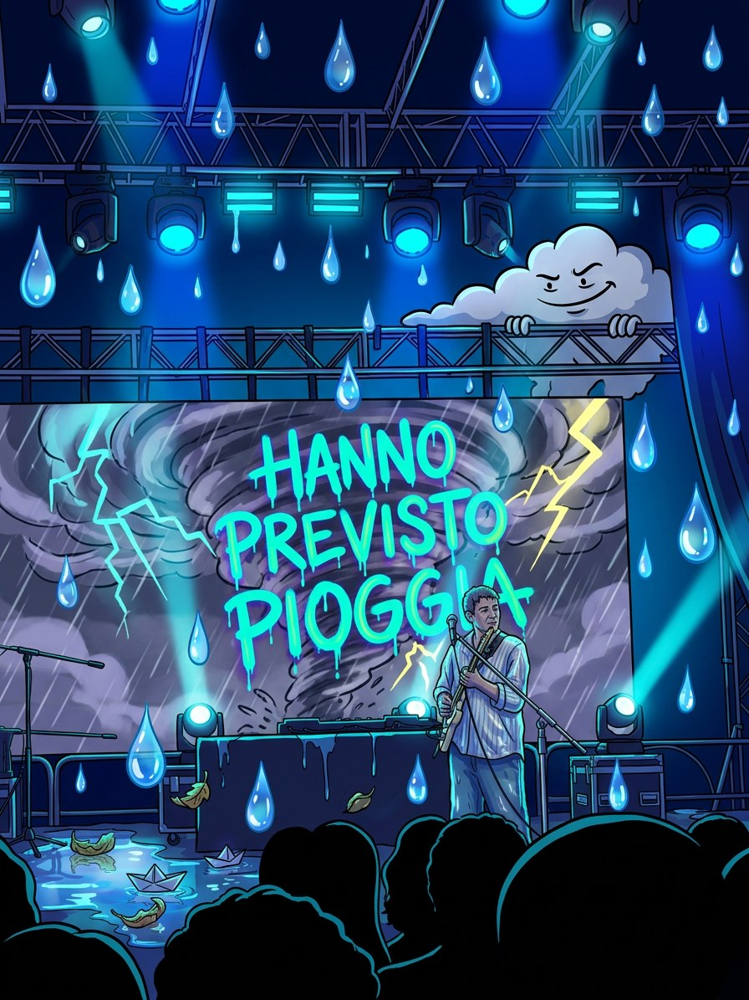
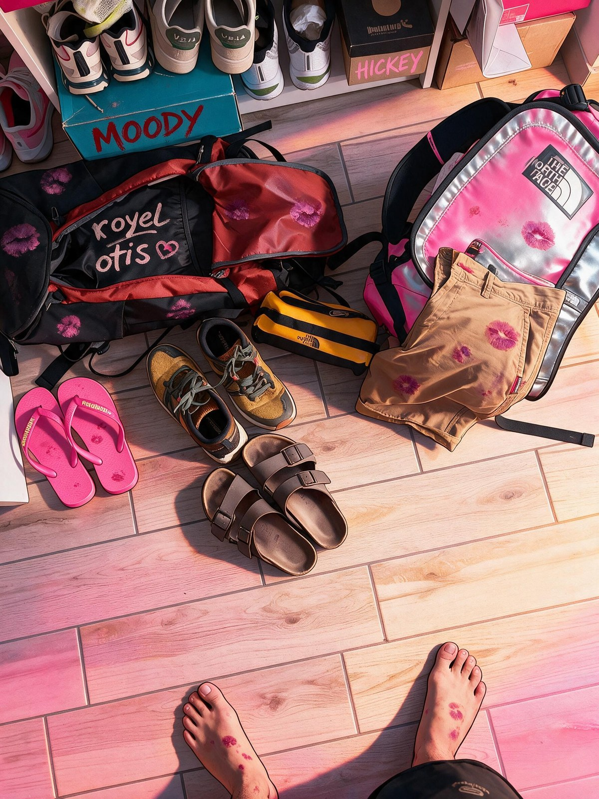
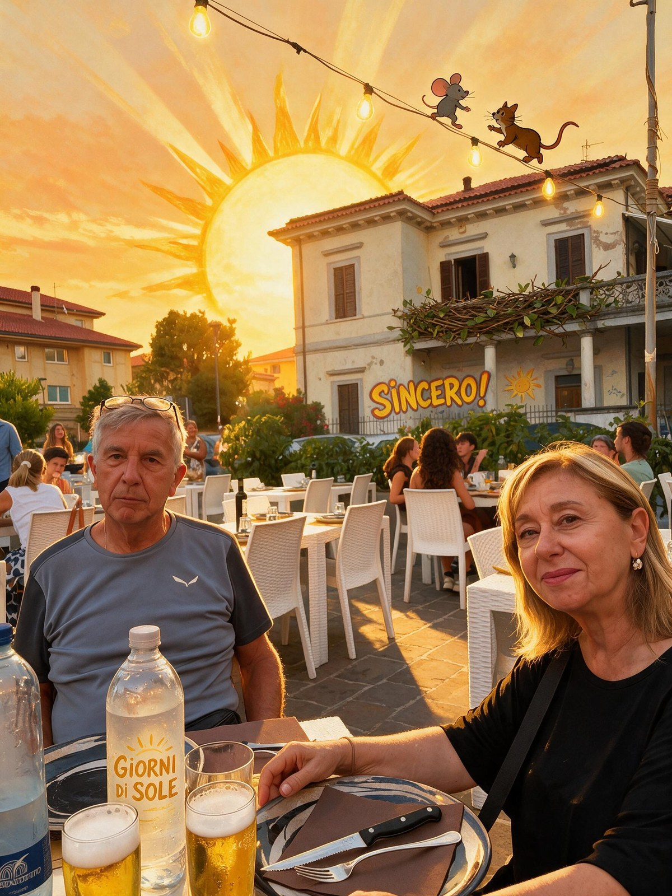
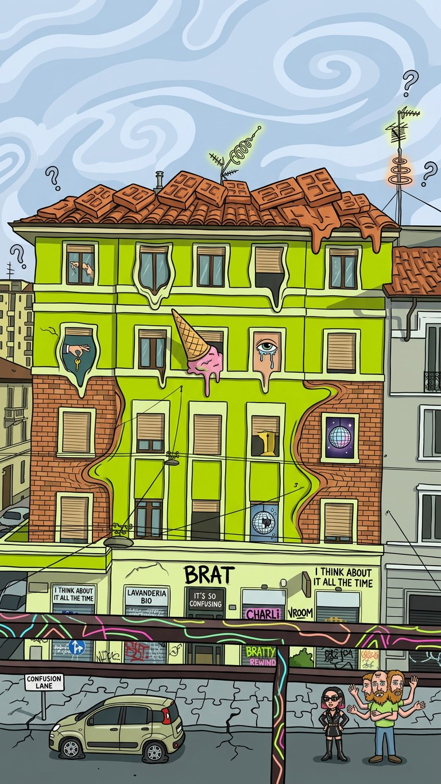
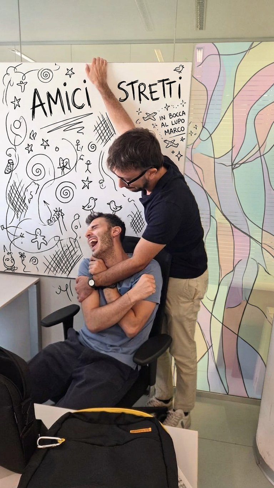

fr. 05

Wet, it rained a lot
Hi, I'm Silvano and nobody seems to agree on what to call me: some say Silvi, some Silva, my mom calls me Bibbi, my friends lately Slivio. One Picture A Day was born to bring together three things that, one way or another, define me: music, images and feels. All of it remixed by a few billion parameters.

Wet, it rained a lot


Packing, pretty excited about the next weeks, but vaccines yesterday make me peaky


What a joy to see them again, I'm truly lucky to have them.

I don't know where to go and it's freakin' hot.


Marco is changing jobs, and I'm a little sad about not having him on the team every day anymore. We've teased each other, hugged, and scolded each other the way only close friends do. But I'm really happy for him, for his goals, for the new path ahead. Good luck, my friend.